2008世界连珠团体赛【陈伟战地日记】完整版
#1 2008世界连珠团体赛【陈伟战地日记】完整版 作者：有志青年 发表时间：2008-5-18 8:38:32
本文版权属于原作者和中国连珠网
爱五子棋网已经获得本篇文章的转载权
如需转载请直接和中国连珠网联系
#2 1、一波三折芬兰行 作者：有志青年 发表时间：2008-5-26 20:58:24
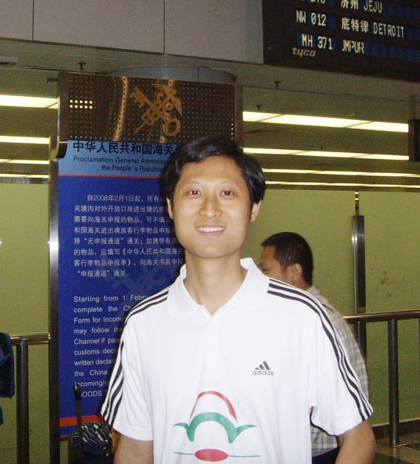
2008年4月26日
凌晨5点钟，我、吴镝、吴昊、曹东四个人在首都机场汇合，准备踏上本次世团赛的征程。这是我第二次参加世界团体赛。两年前，我和吴昊、朱剑锋、葛凌峰参加了在爱沙尼亚举行的第六届世界五子棋团体赛。
我说说两次比赛的一些区别，首先，这次是由"新世界彩旋百货"出资赞助，那威五子棋俱乐部全力支持的一次比赛。而上一次是4名棋手自费参赛，我个人负责主要联络，得到了那威五子棋俱乐部和棋界朋友的大力协助。
第二，有了第六届世界五子棋团体赛的季军,大家这次对中国队的战绩有了更高的期待。上一次是中国队10年后重新参加世团赛，大家虽然知道中国队水平提高很快，但是真正能拿到什么成绩还是心里没底。最后取得季军的成绩，全国爱好者大都比较满意。这一次，我们的目标是保三争一，吴镝拿到去年的个人赛世界冠军更强化了爱好者对中国队夺冠的期望。
回想这一次参赛的准备工作并不顺利，赞助商迟迟未定;吴镝护照丢失;我的护照到期;最后时间已经很紧迫，而签证需要10个工作日内签发，为了买到相对便宜的机票，我们不得不在没有拿到签证的情况下先出了机票。
就在出发前3天，芬兰大使馆告诉我们吴镝的签证被拒签，大家都急坏了，那老师跑到大使馆找签证官说明情况，吴镝则连夜从抚顺赶来北京，拿着世界冠军证书，世界等级分排名等所有能证明他参加比赛的材料找签证官解释。
最后或许是精诚所至，金石为开吧，大家的努力终于感动了签证官，吴镝在被拒签后的第二天重新拿到了新的签证。这也算破纪录了吧。
经过7个小时的飞行，抵达莫斯科转机，让人意外的是在莫斯科 -- 赫尔辛基的飞机上，工作人员居然把我们的护照扣了，要下飞机再给，也不知道什么原因，有可能是我们没有俄罗斯的签证。
到了赫尔辛基，我们又被警察叫到一间屋子里等了一个小时，询问来芬兰的事由，复印护照登记，真是挺郁闷。
出了机场，芬兰朋友卡瑞•海科恩开车将我们接到住处，才发现住宿条件真的很差，像“学生宿舍”一样，这样一间每晚还要36欧元，芬兰消费真是贵呀。
这几年在国内出差都住四星级或五星级酒店，半个月以前去三亚度假还住的五星级酒店的超豪华海景房，现在变成了“学生宿舍”，有点不适应。
紧跟着吴镝发现放在托运行李中的1000多元的现金丢了，吴昊的包也被撬，幸好没有值钱的东西。这里提醒大家坐飞机贵重物品一定不要托运。
看来这次来比赛，我们的运气并不好，还是早点休息，努力发挥实力吧！
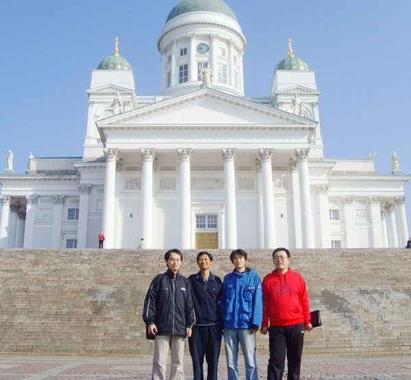
在著名的赫尔辛基大教堂前留影
2008年4月27日
今天早上卡瑞•海科恩带我们参观赫尔辛基的几个主要景点:议会广场、赫尔辛基大教堂、奥林匹克体育馆等。
由于今天是周日，大家都在家休息，街上的人非常少。芬兰的风俗跟中国不太一样，周日大家都在家休息，店铺一般都不营业，街上只有很少的行人，连出租车的价钱都是平时的1.5倍。而中国是越到周末街上越热闹，商场则忙着搞促销。
赫尔辛基这个城市很小，几个小时就把重要景点都逛完了，我们回去休息，准备晚上的开幕式。
这次的团体赛的赛场在赫尔辛基商业学院里，距我们的住处要3公里左右，平时坐有轨电车来回。
开幕式开始，各国棋手到场。按照组委会的规定，每队要把台次顺序写在一张白纸上，交到组委会，一起公布各队的台次顺序。这样对每个队都比较公平，没有人能提前知道别人的台次顺序。
这一次，我任领队兼第四台，曹冬第一台，吴镝第二台，吴昊第三台。这个台次布阵基本上是按照我的建议，大家讨论的结果。
首先近两年我很少参加比赛，练棋也比较少，状态一般，但是国际大赛经验较多，对各国棋手比较了解。我的主要任务是照顾好大家，带领全队打出最高水平，同时自己也要锁定较高的分数，所以选在压力较轻的第四台比较合适。
吴昊棋风以素以稳健著称，放在第三台可以拿到较高的分数。吴镝和曹冬近两年频繁参加比赛，状态都非常好，水平也在伯仲之间。
吴镝去年刚刚拿到世界个人赛的冠军，世界等级分第七，战胜过众多外国高手，容易引起外国棋手的注意，如果放在第一台很可能出现更多和棋。最后，我们选择把他放在第二台。
我们对吴镝寄予厚望，希望他能够成为全队的旗帜，在8轮比赛中拿到7.5分甚至8分。另外，吴镝的棋一般下得比
#3 陈伟战地日记之二：首战开门红 作者：有志青年 发表时间：2008-5-26 21:04:59
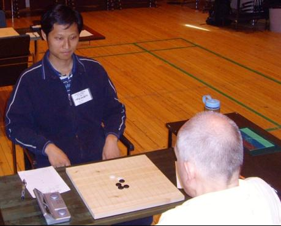
陈伟在比赛中
2008年4月28日
第一轮比赛终于开始了，对手是曾在北京第六届五子棋世界杯个人赛上相遇过的拖得•安得森。安得森开出瑞星局，再看吴镝那盘，对手也走出了瑞星局，我们都选择执白，前11手都是定式。
顺便说一句，在世界比赛和国内比赛有些区别，赛场秩序并不严格，当不该自己走棋时，可以看其他的对局，也可以去倒咖啡，这符合外国人宽松的生活理念。当然，互相讨论，偷看棋谱等作弊行为则是被严格禁止的，一经发现，绝对判负，甚至取消参赛资格。
白12我们不想走入最流行的变化，因为黑13有一种广为流传的和棋定式。我们不想在这里丢掉半分。吴镝选择了一个古老的白12，黑棋基本上必胜，我不敢跟他走一样的变化，选择了另一种古老的白12。
我的棋直到18手国内早已经研究出黑棋比较好的应法，对白棋非常不利，我认为平时不喜欢过多分析开局的瑞典棋手一定不知道。但实战23的下法让我很诧异，局部黑棋非常强，但白棋似乎有机会反攻。
我开始努力计算白棋必胜的下法，感觉告诉我白棋应该已经必胜，但是因为还没有进入比赛状态，40分钟过去了，有一个强防我没有算出如何胜，但白棋至少可以控制局势，狂攻之后，占住F4点就可和棋，如果防守将非常被动。我选择了进攻，24活三，黑25如果挡在反方向白棋可以简单取胜，抓黑棋J8点的三三禁手。26、28的下法是为了方便上面做VCF。29挡在反方向，白棋抓黑棋F4点的三三禁手。白30我努力的在I10和J10之间做出选择，其时J10已经必胜了，具体如下图。
我比赛时没有发现任何一个点能必胜，30分钟后我选择了I10。38手我犯了一个错误，白棋已经没有必胜的下法，由于时间紧张，我只看到黑棋连续进攻无法取胜，我不甘心陷入和棋的局面，而黑棋这时在下面单走D5可以必胜。
下完这手后我开始后悔，似乎看见了黑棋的一些可怕的东西，对手眼冒兴奋的目光，39-47开始连续进攻，我心中暗喜，知道对手已经丧失取胜的机会，局势几经完全偏向我这边。
记得九年前，我和拖得•安得森在1999年第六届五子棋世界杯个人赛B组相遇，当时明星开局，也是黑白一人一片对杀，拖得•安得森出现误算输给了我。看来他在时间紧张的时候，算路不是很好，经常出现误算。
白棋52手之后，优势已经比较明显，左下抓着黑棋F3点的四四禁手，右上还有很多白棋。黑棋53防守，左下有VCT，但是没有VCF。白棋可以通过做V组织进攻。白58之后黑棋已经很难防守。黑59防守后，白棋可以依次走I11、I14，直接必胜。实战中白60活三，61冲四之后63挡在下面有一套反VCF，但是我活三时没想那么多，总觉上面这么多白子怎么都赢了。
当时吴昊和吴镝在旁边看我的棋，出来时跟我说，挺怕我当时时间太少没看见上面黑棋的VCF。其实他挡在里面已经引起我的注意了，无奈64防了黑棋下面一步，下面黑棋彻底没棋了，白棋在右上一大片，黑棋很难有什么防守了。
黑棋65、67勉强防守了两步，白68做V。后来吴昊他们跟我说，黑69活三之后，白棋可以VCF取胜，我说当时没仔细看，只觉得随便一挡，外面白棋更多，根本无法防守。71之后我没有走VCF，而是走了72、74，一子双杀。
直到白80手四三，对手投子认负。出来一看，我们已经3：0领先了，吴镝瑞星执白战胜马丁•卡尔松，吴昊疏星执黑战胜布约恩•林德。吴镝的棋一直在防守，对手满盘攻，而且下的很谨慎，把吴镝有棋的地方都挡了，我觉得挺奇怪，吴镝怎么胜的呢？后来听说是对手超时判负。回去复盘发现对手有可能在算上面的杀把时间用完了，其实上面根本没有胜。
两届全国赛冠军曹冬松月执白迎战斯蒂芬•卡尔森。斯蒂芬•卡尔森八段，瑞典头号主力，被称为“不屈的斗士”，参加过1993年以来全部8次世锦赛A组比赛，9次瑞典冠军的获得者，曹冬与卡尔松大战五小时，难分胜负，最终握手言和。
两年前我们第一轮也是对瑞典队，同样是3.5：0.5取胜，都是斯蒂芬•卡尔森平了一盘，其他人都输给我们。区别是在当时算是爆了一个个大冷门，没有人相信中国队可以这么大比分战胜瑞典队。而对于今天的结果，大家已经可以平静的接受了。不过我们还是很幸运的，因为吴镝的对手超时判负，我的对手有胜的机会没有把握住。
其他国家比分：爱沙尼亚4:0战胜乌克兰，日本3.5：0.5战胜捷克，俄罗斯一队3.5：0.5战胜俄罗斯二队，芬兰队轮空。
赛完后，我们吃完午饭，赶紧准备下午的比赛。
相关棋谱见本站棋谱库：qplist.asp?menu=2&labelid=79
#4 陈伟战地日记之三：再负尤丽雅 作者：有志青年 发表时间：2008-5-26 21:06:36
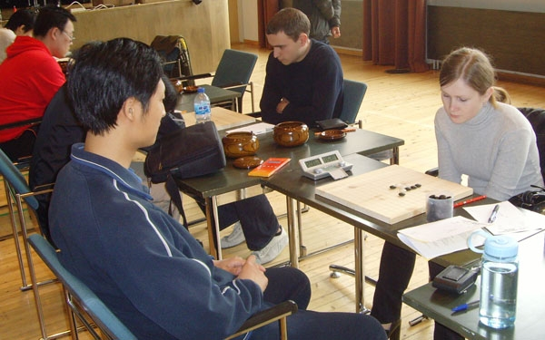
陈伟与萨芙拉索娃.尤丽娅在比赛中
28日第二轮
世团赛进入第二轮，非常巧合的是跟两年前一样，第二轮对手又是俄罗斯一队，硬仗又开始了，俄罗斯一队是5次世界团体赛的冠军获得者，实力之强不言而喻，当时我们打成2：2平。
我的对手是萨芙拉索娃.尤丽娅，这个女孩21岁，世界等级分第19名，2005年俄罗斯冠军，4次世青赛冠军，5次欧青赛冠军。尤丽娅跟中国棋手在世界大赛相遇6次，取得了6战全胜的记录，在去年俄罗斯秋明举办的世界杯个人赛中，她更是在预选赛和A组赛中两次战胜获得当届世界冠军的中国棋手吴镝。
中午吃饭时，我跟吴镝开玩笑，说他当时中了美人计，我要为他报仇，但我心里并没任何轻敌的想法。
比赛中我开出疏星局，前16手都是定式，17手下的是我们提前准备的一个变化。尤丽娅长考了40分钟，18、20的下法并不是我们提前计划的走法，但白棋很强，和我们想的类似。
21-29的下法，缩小了双方下面的空间，彼此都没太多的机会，但是任何一方，如果不按这种平稳的下法，都可能出现风险。
31-39我都下得很保守，因为我没有看到即使黑棋脱险能组织什么强有力的进攻，最后的局面很可能是和棋，但面对强大的俄一队，和棋对我们也是非常有利了，因为吴昊的吴镝的两盘棋不出意外也是和棋。
而苏切科夫.弗拉基米尔给曹东走了一个斜月开局的骗招，曹东对前几步的关键点都有所了解，后面的必胜应该算起来没问题。苏切科夫显然小瞧了曹东，看来我们的排阵策略取得了成效。
41是我的一步败招，估计走在周围任意一个防点，白棋都胜不了。当时我脑袋晕晕乎乎，就觉得想和棋太容易了，走到80手就提和。我
算了不到一分钟就走出了41，尤丽娅42手也没怎么想，很高兴的往上一走，我突然发现白棋已经必胜了。
我脑袋“嗡”的一声，心里充满的自责，这么关键的比赛，必和的棋居然让我给下输了，而且是输给尤丽娅。
我再没有资格嘲笑吴镝中了美人计，自己也成了被嘲笑的对象。郁闷中我投子认负，尤丽娅则创造了对中国人的7战全胜记录。
曹冬顺利的拿到了1分，吴昊瑞星开局与琴晋.康斯坦汀中盘混战很激烈，最终和棋了。就剩下吴镝还在读秒，双方都没有什么机会，吴镝一直在进攻。
吴镝提和，但是谢尔多可夫.埃果尔拒绝和棋，可能被攻满盘郁闷了，想反击一下，结果黑棋的四三没有看见。吴镝戏剧性的胜了，他的运气实在太好了，俄罗斯则沉浸在悲痛之中。
我跟他们说，这挺公平的，我那盘棋本来该和的，我犯了低级的错误输了，而这盘也该和的，谢尔多可夫.埃果尔也犯了低级的错误。也许这就是比赛吧，什么事情都可能发生。
最后中国队以2.5：1.5战胜了俄罗斯一队。俄罗斯二队2.5：1.5战胜日本队，爱沙尼亚4：0战胜捷克队，芬兰队3：1战胜乌克兰队。爱沙尼亚队8分占据积分榜首位，但其实今天最大的胜利者是中国队。因为爱沙尼亚之战胜了第三集团的乌克兰和捷克，得到8分不算什么。而中国队大比分战胜瑞典队，小胜上届冠军俄罗斯一队，已经占据了先机。
相关棋谱见本站棋谱库：qplist.asp?menu=2&labelid=79
#5 陈伟战地日记之四：错怪了曹冬 作者：有志青年 发表时间：2008-5-29 11:29:56
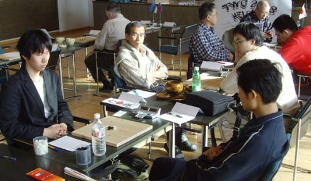
中国队与日本队第三轮遭遇
2008年4月29日
今天上午我们的对手日本队。在上一次团体赛，我们在第六轮意外的以1.5：2.5的比分输给了日本队，提前结束了前两名的争夺资格，这次我们要报仇雪恨。
第三轮比赛开始了。我的对手是高岛纯也，他是这次日本队中唯一的一个年轻人，世界排名第37位，算是日本比较活跃的棋手，两年前参加过爱沙尼亚举行的世界团体赛，与吴昊战平。
我对高岛纯也有所了解，他比较喜欢开松月开局，而且执白喜欢给对手留第三打，有一个他研究的强防，我们管这个变化叫“高岛防”，据说这个变化已经研究出黑棋必胜。
我在前晚向吴镝和曹冬问及这个变化黑棋的胜法，但是因为备战比较劳累，需要准备的变化太多了，他们没有来及告诉我。
高岛纯也比赛中果然开出松月局，我追悔莫及，要是昨天能够准备一下，或许可以拿到1分。我略加思考，既然“高岛防”我不会胜，就不能走到他熟悉的局面。交换后我摆出了一打和二打，我准备用二打中一个不常见的变化对付他。
出乎意料的是，对手给我留下了黑棋必胜的一打。看来他是想用骗招了，我正常应对，看他准备用哪个骗招。
白8直接变招，没有走最强防，我想他可能认为松月一打的必胜是李洪斌最先研究出来，中国棋手会对白棋最强防的变化比较了解，白8的次强防会被忽略。
黑9是定式，我没有思考就走出来了。我当时真的希望白10能够防在反方向，虽然白10防在两边黑棋胜的难度差不多，因为反方向的棋在03年全国赛中我和薛文曦下过，当时是云月开局变成的松月共通型，最后一步关键的做棋我没有走出来，结果和棋了，现在我当然还记得。
高岛没有那么走，这边黑棋怎么胜我记不清，只能慢慢算了。
我喝了一口水，在这里自来水是可以直接饮用的，我们带来的矿泉水前两天已经喝完了，现在也开始喝芬兰自来水。大概是水土不服，我肚子一直很疼，后来听说吴镝他们也都拉肚子了。
因为没法集中精力，我只能先把第11手走了，这是书上的定式，我还有大致的印象。白12之后我进入长考，棋谱上的东西想不起来了，算路也提不起来。
40分钟过去了，我几乎没算出什么来，第13手就是胡拍上的，希望能够通过对杀把白棋做死。白14从容的防守，没有什么问题。15、17的下法依然是想在右下凝聚优势，我并不觉得白棋的反击能够取胜。
18手也是正常的防守。黑19我下了一步败招，我当时在实战的位置和L7选择了很久。L7的下法是正确的，黑棋虽然不能够取胜，但是能够主动的控制局面。20-23都是必然的下法，这时我并没有看到白棋可以简单的抓黑棋i11的三三禁手。但幸运的是，高岛也没有看见。
黑25我依然在右下做棋，我们两个都没看白棋的胜法。白26做VCF，黑27必然。白棋这时虽然放弃了简单的胜法，但是28走在i13依然可以必胜。
我看出了白棋的胜法，心里开始紧张。我故作镇静，期盼着对手看不到。
高岛一直在算我那边的棋，28下出防守的一步，我非常高兴，简单计算后走在了i9，这时白棋已经没有取胜的机会了。白30继续走弱，我以为他会防在上面。35做棋之后，高岛的时间已经不多了，他简单思考之后没有防在m8，可能是惧怕我交换之后i12的做棋，黑棋在上面和左面的优势太大了。但是实战的下法，黑棋确有简单的VCT。
我幸运的赢得了这一分。但下得太差了，我肚子疼，始终不在状态，高岛同样走的也很差，几次错过取胜的机会，防守也出现漏洞。这时我们已经3：0领先。
吴镝的对手石谷信一给走了一个松月白4弱防，吴镝没有按照书上的五手两打点，我没有仔细分析过黑棋是否能必胜，但石谷信一的防守实在太弱了，吴镝简单的拿到了1分。
吴昊对佐藤清富那盘更有意思，吴昊疏星执黑，佐藤居然白8就走出弱防，后面吴昊一路做棋，佐藤迅速就崩溃了。
大家看曹冬的棋，都皱眉头。曹冬居然松月执白走了个必败考饭尾义弘，早上曹冬问过我这个骗能不能走，我跟他说这个太简单了，肯定不行。但事到如今，我们只能盼望饭尾义弘走错了，然而饭尾走出了正解，曹冬遗憾的输掉了这盘棋，他强大的算路一点都没用上。究其原因，是曹冬惧怕和棋，又没有太多好的变化可走，最后铤而走险。
这是一种战略的失误，这种比赛应该尽量不走骗招，即使非要走骗招也不应该用这么老的变化考下了几十年棋的日本老棋手。
曹冬出来很郁闷，说早知道“大熊猫”（这是我们给饭尾起的外号，因为他脑袋长的有点像大熊猫）会走这个变化就不给他下这个了，曹冬还在黑板上画了一只大熊猫，逗得我们直乐。希望曹冬能够吸取教训
#6 陈伟战地日记之五：顽强的日本队 作者：有志青年 发表时间：2008-5-30 16:48:42
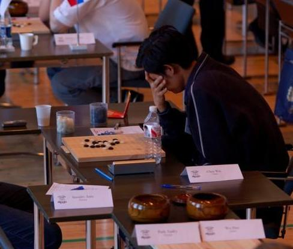
凝神苦思 -- 陈伟在比赛中
2008年5月1日
第七轮对手是捷克队，我们现在已经没有什么别的想法，就是要全取4分。
我的对手银月开局，我不知道他为什么开银月这样的黑大优开局，我交换后选择了一打和三打。到黑13都是定式，黑棋大优。白20之后，黑棋已经占据外势，有太多的做棋点。白30败招，黑棋迅速取胜。
吴昊那盘对手居然走岚月局白4的立二防守，这个棋形中国棋手早就研究出黑棋必胜，果然吴昊轻松得到了1分。
吴镝的对手也挺有意思，白14、16的下法极具攻击性，但是碰到算路精确，同样擅长攻击的吴镝就只能甘拜下风了。黑棋凌厉的攻杀让对手很快投子认负。
值得一提的是，网上将谱传错，把黑白双方的棋打反了。世界冠军安度在网上评论说黑棋31的下法太强了，他以为吴镝执白呢。得知吴镝执黑他可能很郁闷，因为中国队与他的母队爱沙尼亚队的比分越来越接近。
曹冬的对手松月执黑25走出变招，曹冬长考后应对有些问题，据说黑棋盘中有取胜的机会，但没有把握住。曹冬抓住机会一举取胜。中国队又一个4：0暂居积分榜首位。
中国队追得太紧了，连续三场4：0，给了爱沙尼亚很大压力，他们必须在这轮大比分战胜日本队才能获得冠军。
巨大的压力让爱沙尼亚走了很多冒险的下法，然而，他们遭到了日本队的顽强阻击，高岛纯也中盘战胜安茨.索索夫。石谷信一抵挡住了爱伏.欧尔的进攻，双方和棋。泰姆拉.图耐特急于抢攻，露出破绽，饭尾义弘抓住机会，连续进攻取胜，攻击非常准确。
本届世团赛夺冠大热门爱沙尼亚居然以1.5：2.5输给日本队，中国队22.5高居积分榜首，我们只需在第八轮跟俄罗斯二队中取得2.5分，则可提前夺冠。
我们非常高兴地去吃午饭，现在几乎所有的人都相信中国队就要提前夺冠了。我们制定出战术，都稳健开局，只要一个人走出胜型，其他人都全力和棋。
相关棋谱查阅本站 五子棋谱库 ： qplist.asp?menu=2&labelid=79
#7 陈伟日记六：比赛中的意外太多 作者：有志青年 发表时间：2008-6-12 17:14:52
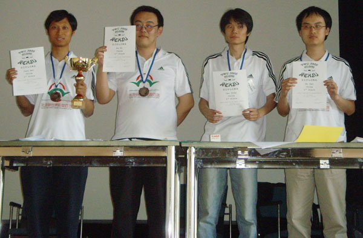
第八轮开始了，俄罗斯二队两个开局的棋手都开出了瑞星开局，摆出一副全力阻击我们架势，估计他们定的目标是四盘和棋。我也开始出瑞星局，并也和曹冬的棋型一模一样，我们两个都执白。吴昊不想跟我们走一样的变化，选择了交换，担心对手有什么准备。吴镝则思考了10分钟之后开出了疏星开局。我时常看一下曹冬的棋，所以前22手都没有太多思考，这样又节省时间，又节省体力。我只把自己的想法用曹冬的棋验证一下，到22手我们的想法都一致，我相信我们两个的实力加起来一定比对手强。两个对手的23选择了不同的走法，他们可能也不想两盘棋走得一样。这时吴镝的棋已经走到我们提前的研究范围，吴镝曾经告诉我白22之后黑棋必胜。这也是我为什么前两次开局都走这个变化的原因。我们非常高兴，只要吴镝拿到1分，我们3盘就可以都和棋了。吴昊的棋瑞星执黑，双方落子如飞，迅速下了几十手。黑棋交换之后43下在了E6，黑棋看上去有一片优势。我想棋下的这么快，根本不是吴昊的风格，难道吴昊已经知道黑棋必胜，在我的印象中好像也有这么一个棋型。可以对手是去年世界E-mail比赛的冠军，前年世界E-mail比赛的亚军，对瑞星研究非常深刻，难道会这么简单的输掉吗？中国队就这么轻松的得到两分吗？遗憾的是，吴镝想了半个小时没有下棋，他似乎并没有找到黑棋必胜的下法，不知道是事先的研究有误，还是吴镝没有算出来。前两天我一直不知道这个棋黑棋怎么，吴镝跟我说非常简单，就是VCT，实战中算一下就行了。没想到他自己不知道，如果当时他再有一点耐心，看一下这个变化，也许今天的悲剧就不会发生了。黑棋29、31的下法显然忽略了白棋32最简单的防守。黑棋上面无法取胜，交换空间之后37防了回来。看到这里，我感觉这盘棋很可能吴镝会输。我已经没有了选择，我这盘必须取胜，不然我们就没有了夺冠的希望。如果我和吴昊取胜，曹冬和棋，我们依然是冠军。在这种压力下，我聚精会神，仔细分析盘面。我突然感觉算路越来越好，我的小宇宙终于爆发了。我重重拍下白28，我要在气势上压倒对方，周围迅速有人围观，看我是不是下出了必胜。其实我的想法是右下黑棋很难抢到先手，而左上白棋可以组织非常猛烈的进攻。对手长考之后29、31的下法。这是一种激烈的对杀的走法，认为我的右下方没有胜，而直接在左边进攻。我开始长考，发现这手棋一点也不可怕，即使白棋右下没胜，防在E8也没有关系，借助左上的棋，黑棋的进攻根本无法取胜。但是现在我需要的不是安全，而是全取一分，直觉告诉我右边的白棋应该是必胜型。我长考40分钟，仔细验算，终于算出了白棋的必胜。这是一套非常绝妙和复杂的杀，里面的做棋防守分支非常多，蕴藏着很多黑棋禁手。这时我的时间还有30分钟，对手只有15分钟，我充裕的时间得益于前面的节省。32做棋，实战黑33是强防之一。34继续做VCF，35唯一防。41防守之后，白棋有一套复杂的VCT抓黑棋右上N9点的四四禁手。吴镝那边嘴里不知道小声嘀咕着什么，下的棋啪啪直响，非常有气势，我利用对手思考防守的5分钟时间，赶紧看吴镝那盘棋。白棋已经下完第48手防守，我并没有看到黑棋取胜的方法，不知道吴镝有什么高招还是故作镇定。但我已经隐约的发现黑49走C8，51走D10，53走B12，55走G6的防守。这种利用进攻的防守应该可以化解白棋下面的攻势。我心里踏实了，继续看我的棋，过了一小会，吴镝那盘结束了，我专心下自己的棋，都不知道那盘的结果。阿伏科夫•马克西姆正好防到41手，我验算着上面的VCT抓四四。5分钟后，我走了出来，对手投子认负。其实黑33的变招可能更强，白棋的胜法如变化图，38的做VCF抓黑棋J7四四禁手之后，39有很多各防点，图解中是最强的一种。其他防点大家可以研究一下，通过逼迫黑棋J7或K10的四四禁手都可以取胜。
出去和吴镝聊天得知我们两个一胜、一负。我跟吴镝说了他有唯一的防守，他发现之后非常的悔恨，这一盘他的状态不太好，可能压力太大了。他跟我说，他开疏星就是怕我们三盘瑞星都和棋，他必须赢。我们现在都盼望吴昊可以取胜，曹冬和棋应该问题不大。不一会，吴昊出来了，他那盘和棋。吴昊对我们说，他那盘已经很幸运了，43的下法根本不是黑必胜，而是白必胜，白棋44的下法非常强，他后面都是用进攻考验对方并消耗时间。吴昊的策略是正确的，埃皮凡诺夫•迪米切防守用的太多的时间，用最后的10分钟进攻并没有走出胜棋，这盘以和棋告终。
我们这时唯独可以盼望的就是曹冬可以取胜。但是那盘面上的空间已经不多了，我们盼望着对手的失误。双方都已经进入读秒阶段，下一步棋增加三十秒时间，由于这盘棋的重要性，很多人都在关注这盘棋，似乎连空气都紧张起来了。机会终于来了，阿特莫耶夫•谢尔盖第83手出现失误。可惜曹冬86手跳三出现失误，黑棋可以利用冲四解掉白棋的杀。如果86走87位活三，就可以通过5步的VCF抓黑棋K
#8 陈伟战地日记：尾声 作者：有志青年 发表时间：2008-6-12 17:18:51
芬兰的“活雷锋”
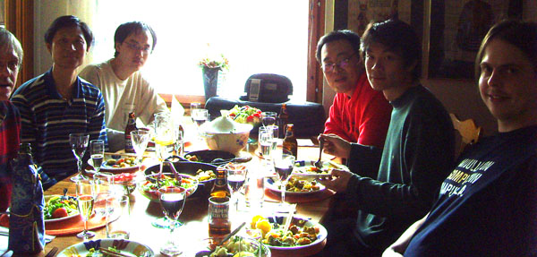
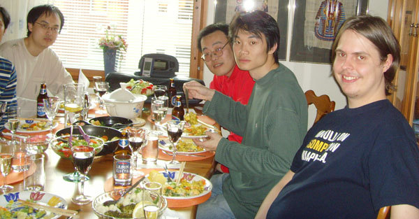
在尤西•伊科恩家
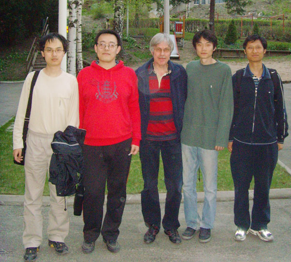
中尤西•伊科恩之父
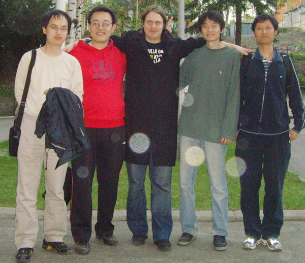
中尤西•伊科恩
2008年5月3日
所有的赛程都结束了，今天的日程安排是12点30分去开国际连珠联盟的年度会议。好容易来一趟芬兰，正好利用上午的时间去买点纪念品。赫尔辛基有一个露天购物广场比较有特色，其实刚来的一天卡瑞•海科恩已经带我们都去逛过了，只不过那天是星期日，街上几乎没有人，购物广场也不开门。芬兰朋友送给我们的地图都是芬兰语的，实在不知道做什么公交车过去，于是我们决定打车过去。这边的出租车只有奔驰和沃尔沃，价钱当然也很贵，不过偶尔打一下也还可以。吴镝和吴昊犯懒，都不愿意出去，我和曹东到门口去打出租车。等了变天也没有，这边的出租车太少了。记得前几天吃饭的时候，那个小比萨店门口有等候的出租车，我们决定过去找一下。走了10分钟，终于到了比萨店，但是今天门口却没有出租车。不过这边路上经过的出租车不少，我们在路边招手，没有一辆车停下，实在搞不清这边的规定，是不是只有指定地点才能打到车。时间已经10点多了，我们实在不能再等了，旁边就有一个公交车站，我去问一个等车的人如何去露天购物广场。她也不是特别清楚，只是告诉我到对面坐任何一辆车到火车站转火车可以到附近500米的地方，然后走过去。当然这边的火车和我们想象中的不一样，就像城铁一样。其实从这里到露天购物广场只有5公里左右，只不过做车不方便。这边人真是太少了，公交车站只有一个人，我们也没法去问别人。最然我觉得她说的好像和地图上的方向不一样，我们还是听她的到对面坐车去了。上了一辆公交车，票价是每人每次2.2欧元，还是挺贵的，不过我们买了5天的通票，18欧元随便坐。上车我赶紧就随便找了一个妇人问到火车站有几站。她告诉我们做反了，我们如果着急的话，下一站可以跟她一起下车，她家就在车站，可以开车把我们送过去。我们抱着怀疑的态度跟她一起下了车。因为我几年前去过瑞典，那里的人都非常友善，所以对北欧人的印象非常好。下车没走10几米就有一个独立的车车库，她从里面开出一辆小车，真的把我们送到了火车站。我们万分感谢，这里的人真是太好了，我不知道她的姓名，在她的允许后一起照了个合影，我要记住这位善良的芬兰妇人。她把我们放在一个小停车场，这里既可以去做火车，又可以打到出租车。我们坐出租车到了露天购物广场，车费要15欧元，这边打车确实太贵了，一共才不到5公里，比北京贵十倍。这边的小摊时不能讨价还价的，我们买了几个小纪念品，差不多每件十几欧元。
我们赶紧打车来到开会的地方，正好准时。这次年会除了正常的事务外，最主要的是讨论五子棋新规则的确定。现在的规则是五子棋从中国传到日本后最近100多年的逐步修改出来的，最新的规则是10年前确定。经过这十年的研究，可下变化越来越少，顶尖高手都希望能够改变规则，增加可下变化，更突出棋手的创造力。每个国家都认为规则改革是未来的必然趋势。两年前的会议，各国代表投票选出了欧洲人提出的一项规则，但日本作为国际连珠联盟的创始国投了否决票。因为日本只同意日本人自己提出的山口规则。由于欧洲人急于改变现有规则，最后作出了妥协，接受了日本的山口规则。这次投票只有中国反对，其他所有国家都支持在未来的4年的国际大赛采用山口规则。这个规则只在开局阶段有微小的改变，在包含原有的局面的同时又增加了有限的一点变化，是比较保守的方案。尽管不喜欢，现在我们只能接受，争取在这四年中寻找到更合理的规则，让世界各国接受。不过在国内比赛中还会沿用原有的RIF规则。
开完会之后，我们进行了保龄球的娱乐，很多棋手打的都不错，大家在一起聊天，加深了友谊。我非常高兴五子棋这个爱好给了我一个机会，认识了很多外国朋友，了解各国的文化。
晚上尤西•伊科恩邀请我们去他们家做客。因为尤西•伊科恩两年前来过我们家，他的父母今年来中国也得到了中国朋友的热情款待，所以他的父母特别盛情的邀请我们过去。他家住在离市中心坐地铁20多分钟的地方，环境挺不错，这